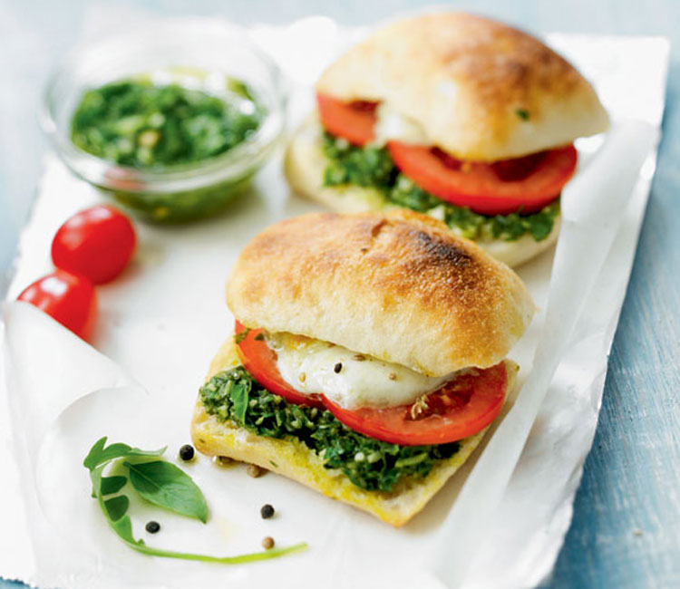
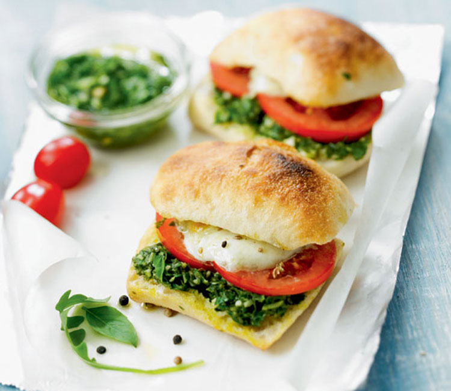

En menos de 15 min

 

Tenes poco tiempo?
Cuando ya pasamos de los 17 o 18, comenzamos a hacer más cosas y tener más responsabilidades, ya sea por trabajar, estudiar o ambas cosas. Es por eso que nunca tenemos oportunidad de hacernos algo de comer, estemos en la casa o para llevarnos a la escuela o trabajo.
Recetas
Huevos revueltos con judías verdes y queso en fetas
- 100g de Queso fetas
- 4 Huevos
- 150g de Judías verdes
- 2 de Cebollas
- 4 cucharaditas de Aceite de oliva virgen
- Sal
- Pimienta negra
- Lava las judías vedes bajo el grifo.
- Retira las puntas a las judías verdes y córtalas en trozos de 2 cm. Reserva.
- Pela las cebolletas y córtalas en aros de 5 mm.
- Calienta 2 cucharadas de aceite en una sartén y dora 3 minutos los aritos de cebolleta.
- Añade las judías verdes y saltea 5 minutos, hasta que se doren.
- Bate los huevos en un cuenco.
- Por último incorpora los huevos y ve cuajándolos poco a poco para que nos queden cremosos.
- Desmenuza el queso feta y añádelo por encima.
- Sazona con sal y pimienta negra recién molida.